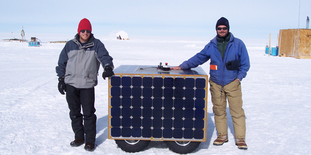

| |<< |< August 6, 2005 >| >>| | |
|
Today is a late post, and for good reason. Today's theme is: the end of the season. According to the calendar, the equinoces and solstices mark the beginning and end of seasons. Around here, this near to the pole, other benchmarks are used. Case in point: when does the sun fall below the horizon, ending the continuous day that has graced this area for months. At the far southern reaches of the world, on Antarctica, winter-over crews are eagerly anticipating the rise of the sun above the horizon. Sunrise and Sunset. For us, Sunset occurred at just past midnight. Really, this post is happening on Sunday. Of course, once the sun has set below the horizon, it starts coming back up, so sunset and sunrise are one and the same at this moment. Alas, whereas an hour before Sunset the sun was out in the clear sky and casting a golden glow over everything, by the time it'd reached the horizon it had slipped behind a bank of clouds hugging the horizon. So, iin the end, no joy tonight. The subzero temperatures (fahrenheit) didn't encourage people to linger around. But, since tomorrow's Sunset will occur at basically the same time and night will last just a touch longer, perhaps we shall try again tomorrow. All of us are hoping to watch the sun slowly slant below the horizon, which is flat and straight as a ruler here, and maybe even see the elusive green flash. All in all, today was a good day. My theory proved to be correct, more or less. I didn't actually come up with a theory to explain the repeated power system failures we've encountered in the last three days. Instead, I vaguely identified the root cause, and then modified the hardware and software to completely avoid that cause. Thankfully, this course of action was successful - and we managed to bring a third panel online this afternoon with nary a mishap. The weather even cooperated - blue skies all about, and a powerful Sun pouring sunshine down on the robot's solar panels. In fact, during the hour or so that we sent the robot out on its now-familiar autonomous route, with only three panels activated and providing power, we managed to actually have a slight net increase in the battery voltage. In other words, the batteries not only didn't have to provide much power, but they actually were given a small amount of extra energy during the course of the route. We have managed to borrow and (more importantly, learned to operate) the station's digital camcorder. So, we now have a bit of higher-quality footage than we posted the other day. But, seeing as it is now past midnight, and we still have more work to do tomorrow, I'm afraid I haven't had time to put together decent video clip for your viewing pleasure. Instead, enjoy this picture, the first on this trip, actually, of both Jim and I and the robot in a single frame. --Alex Streeter |
|
|  | |
| At long last, a picture of the three of us. | |
| |<< |< August 6, 2005 >| >>| |
| [Main] | [Mission] | [Design] | [Science] | [Papers] | [Pictures] | [Team] |
|
Last Updated on 10/20/2005 by Streeter
Site © Thayer School of Engineering, Dartmouth College, Hanover, N.H. |